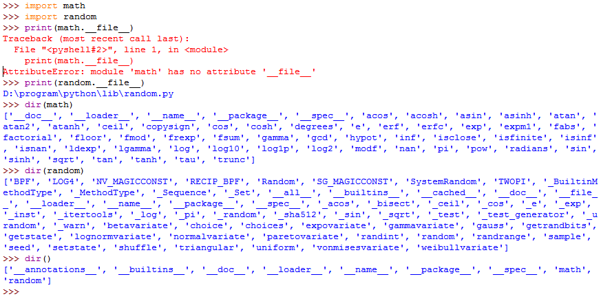

Phân chia module trong Python
Đối với các dự án lớn, có nhiều chức năng thì chúng ta cần chia nhỏ thành các file khác nhau để giúp dễ bảo trì và tái sử dụng.
Để tải một module vào script của bạn, sử dụng cú pháp sau:
import modulename
Khi gặp câu lệnh trên thì trình biên dịch sẽ tiến hành tìm kiếm file module tương ứng theo thứ tự thư mục sau:
- Thư mục hiện hành mà script đang gọi
- Các thư mục trong PYTHONPATH (nếu có set)
- Các thư mục cài đặt chuẩn trên Linux/Unix...
Để lấy được đường dẫn mà một module đã được load bằng trường __file__.
Để lấy được danh sách các thuộc tính và phương thức mà module hỗ trợ, sử
dụng hàm dir(modulename). Có thể gọi hàm dir()
không tham số để lấy các thuộc tính và phương thức của scope hiện tại.
import math
import random
print(math.__file__)
print(random.__file__)
dir(math)
dir(random)
dir()Kết quả chạy thực tế như sau:
Tạo một module riêng của chúng ta (common_util.py):
from datetime import datetime
DATE_PATTERN = '%d/%m/%Y'
'''
Notes:
strptime = "string parse time"
strftime = "string format time"
'''
def string_to_date(date_str):
return datetime.strptime(date_str, DATE_PATTERN)
def format_date(date_obj):
return datetime.strftime(date_obj, DATE_PATTERN)
Sử dụng module trên (demo_module.py):
from datetime import datetime
import common_util as cu
print(cu.string_to_date('05/05/2018'))
print(cu.format_date(datetime(2011, 1, 3, 0, 0)))
print(cu.format_date(datetime.now()))